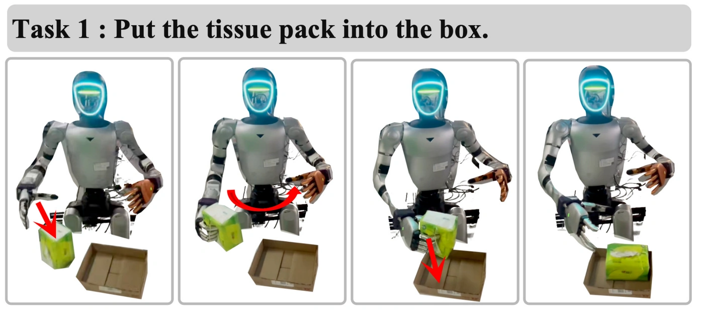

Convert the motion
Reconstruct both hand trajectories from video and estimate torso motion from recorded camera poses. Describe subsequent motion relative to the current torso to form coordinated action targets.
Collect egocentric human demonstrations and convert them into training data for humanoid loco-manipulation.
Operator + reset assistant
Demonstration + scene reset
Tissue-to-Cabinet collection. Full recordings on the same time scale, including resets. Staffing shown for our collection setup.
EgoLoAF converts egocentric human demonstrations into coordinated torso and hand action targets, robot-view observations, and hand–object affordances. These converted data post-train a humanoid VLA without task-specific real-robot teleoperation demonstrations.
Record natural human demonstrations without wearable motion trackers.
Pair subsequent motion with the current pose of each hand relative to the object.
Adapt the action expert while keeping the vision-language backbone frozen.
Training humanoid vision-language-action (VLA) models relies heavily on costly real-robot teleoperation. Recent efforts convert egocentric human demonstrations into humanoid training data. However, most methods still require wearable motion trackers and leave important hand–object interaction cues implicit. Many also mix in real-robot teleoperation data for VLA post-training. These dependencies limit scalable data collection, while implicit interaction cues make precise contact harder to learn. To overcome these limitations, we propose EgoLoAF, the first paradigm to derive all training data for humanoid loco-manipulation directly from egocentric demonstrations without wearable motion trackers. We post-train the VLA on the converted data alone, without real-robot teleoperation demonstrations, and use explicit hand–object interaction cues to guide action generation. Specifically, to obtain humanoid action targets, we estimate torso motion from recorded camera poses and reconstruct both hand trajectories from video. From the same recording, we use each hand’s current pose relative to the object to represent hand–object affordances. During post-training, we inject these affordances into the action expert through cross-attention while keeping the vision-language backbone frozen. Additionally, we release 128,400 egocentric demonstration episodes spanning 1,000 hours and 1,284 tasks, together with converted humanoid action trajectories and rendered robot-view observations. Across four real-world tasks, EgoLoAF nearly achieves teleoperation performance (73.1 vs. 74.4 in mean Task Progress Score), while achieving a mean 4.03× improvement in data-collection efficiency.
The same demonstration tells the policy how the body and hands move, and how the hands are positioned relative to the object before that motion.
Reconstruct both hand trajectories from video and estimate torso motion from recorded camera poses. Describe subsequent motion relative to the current torso to form coordinated action targets.
Replace human arms and hands with rendered G1 arms and O6 hands. The rendered observations and action targets form humanoid training pairs.
Encode current object-relative hand poses as hand–object affordances. Inject these affordances through cross-attention during post-training, with the VLM frozen.
At deployment, the G1 estimates the same hand–object affordance representation from its own observations to guide action generation.
Full, silent recordings on the G1. Watch at 2× or 3× speed, switch to the original pace, or open any video fullscreen.
Pick up a tissue pack and place it into the box.
Turn and lower the body to place the tissue pack in a low bin.
Pick up both plush toys, turn, and place them into the tray.
Pick, turn, walk to the cabinet, squat to place the tissue pack inside, and close both doors.
128,400 complete demonstrations across 1,284 tasks, with 100 demonstrations per task. Quality-filtered recordings total 1,000 hours and cover different manipulation goals, objects, and body movements.
Original and rendered frames share timestamps, motion targets, and affordance annotations. Training windows pair a current observation and its affordances with subsequent torso and hand motion.
Recordings are checked for completeness, camera trajectories, rendering quality, and task completion.
Across four tasks on a Unitree G1 with O6 dexterous hands, EgoLoAF reaches 73.1 mean Task Progress Score, close to 74.4 for the teleoperation-trained baseline. Task-specific post-training uses egocentric demonstrations alone.

Grasp a tissue pack, turn the torso, and place the pack precisely into a box.
Tissue-to-Box: EgoLoAF 81.0, teleoperation-trained baseline 81.4, ego without affordances 64.2.
More than quadrupled on average, measured using acquisition person-hours at matched training-frame budgets.
| Task | Teleop | Ego w/o affordances | EgoLoAF |
|---|---|---|---|
| Tissue-to-Box | 81.4 | 64.2 | 81.0 |
| Tissue-to-Bin | 75.2 | 55.8 | 70.0 |
| Pick-Turn-Place | 74.8 | 50.2 | 75.4 |
| Tissue-to-Cabinet | 66.0 | 42.5 | 65.8 |
| Mean | 74.4 | 53.2 | 73.1 |
Teleop denotes the policy post-trained on real-robot teleoperation data. Ego w/o affordances uses converted egocentric data without affordance conditioning. Reported values aggregate repeated evaluation batches.
@misc{zeng2026egoloaf,
title = {EgoLoAF: Learning Humanoid Loco-Manipulation from
Egocentric Demonstrations with Hand--Object Affordances},
author = {Yiming Zeng and Jiangyuxuan Dai and Yuheng Na and
{TAN ZHU XUAN} and Zihan Lin and Xinfang Qi and
Shijian Zhang and Chengqi Shi and Yihan Kuang and
Zhide Zhong and Junjie He and Junfeng Li and
Zimu Han and Naipeng Li and Haoang Li},
year = {2026},
url = {https://egoloaf.github.io/}
}